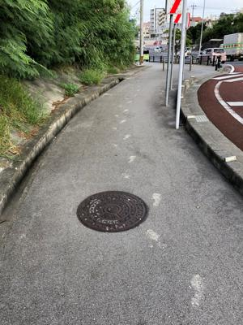

うるがいの話 ある日
最新: 足跡うるがいとは 前提知識です
カニの画像をクリックすると『うるがいの話』サイトを表示します|
|
【うるがいの話】 うるがい(ｳﾙｶﾞｲ urugai)とは、『もずくがに』の名前でとても大きくなります。 |
|---|---|
|
|
【Got cat カミマヤーの話】 たながー（ﾀﾅｶﾞｰtanagaa）とは手長えびのことで、何種類かあり大きいのは車 エビぐらいになります。 |

|
【ぶながぁの話】 ぶながー(bunagaa)とは、赤い髪の毛、赤い身体、そして身長は１ｍ２０ｃｍ ぐらい、川の蟹を食べているの目撃された。場所は沖縄県国頭郡大宜味村のと ある村僕の隣近所に住んでいる爺さんから、聞いた話です。 |
|
|
【ギーマの話】 ギーマ(giima)とは、山原の里山に咲くスズランに似た、 花を付けます。実は食べられます、 気が付くと口の周りが紫になっています。 |
2021年10月16日 (土）足跡
17:05

誰かの泥のついた靴で歩いた足跡が、くっきりと歩道に付いていた。がに股で
ある、私も中学生まで父親に似てガニ股だった（らしい）、名護で開かれた国
頭郡の中体連２百メートル競技を終えて（ビリ）待機場所に戻ると、従兄弟が
笑っている。がに股で走っているうちにだんだん、背丈が縮んだらしい。とっ
ても傷ついた、それからはガニ股を直そうと、ガニ股で歩く父親の後から気を
つけて歩いた。生徒会長が考えた高校３年生の時の体育祭のテーマ、『足跡に
何を残せるか』を思い出す。野球部のキャプテンをしていたと思うが、名前は
出てこない。その時、恋に恋していた私は、良くそんな真面目なテーマを思い
つくなと考えていたが、彼は人生に真摯に向き合っていたと、今思う。今は立
派な大人になっている筈だ。
お菓子を食べる時のセルフコントロールを、スピリチュアルの師匠からアドバ
イスを貰う。おやつを食べるとき
自分と対話しながらって良いと思います。
「食べたい？」の答えが
「お腹すいてる」だったり
「お腹すいて無いけど、今これ
食べたい」だったり。
空腹以外の何かを満たしたくて
食べる事あります私は。
空腹以外の時は、少なめに、お茶
のみながら、出来れば「これ」って
思ったものを食べます。
食べている時は「美味しい」とか
集中して認識するようにしてます。
「これ」以外で済ませても不満が
残るので。
よしゃ、と気合をいれる。